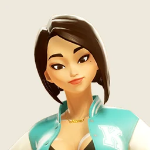
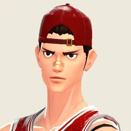
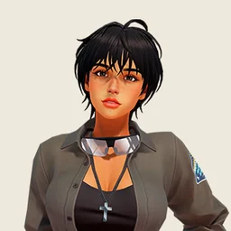
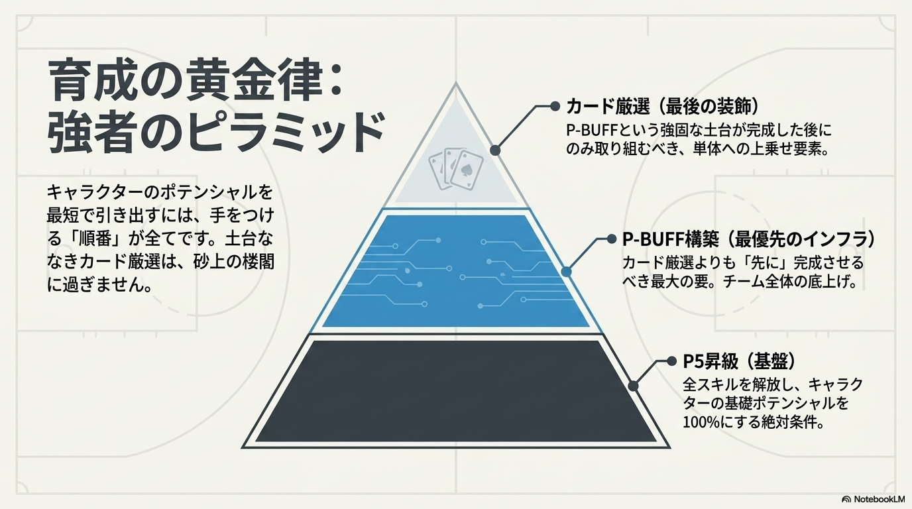
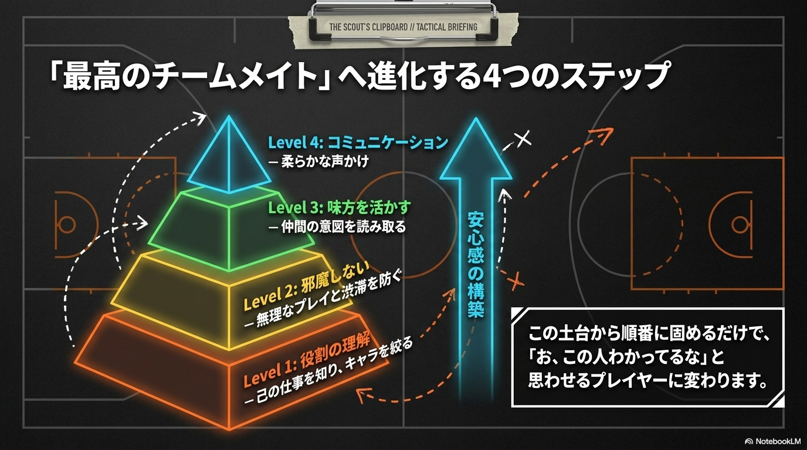
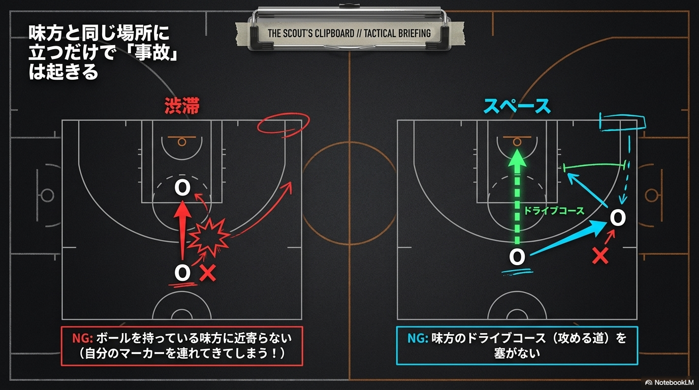
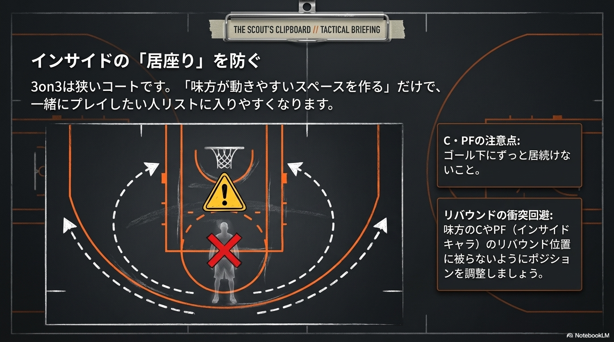

ROAD TO HIGH TIER
上位リーグ（High Tier）で勝つために必要なのは、テクニックの前に「順番」です。①役割を知る → ②育てるキャラを決める → ③正しい順序で育成する → ④チームで勝つ立ち回りを覚える。このガイドは、note連載の要点を4ステップに凝縮したものです。詳しい解説は各ステップ末尾のnote記事で読めます。
ポジションの特徴
結論：全てのプレイを1人でやろうとしないこと。自分のポジションの「仕事」を理解しているだけで、味方の安心感も勝率も変わります。
司令塔
ボール運びと試合作りが仕事。味方を活かす展開力に加え、守備で流れを変える力も求められます。最初に触るとゲーム理解が一気に深まるポジションです。
スコアラー
チームの得点源。フリーで打てる位置取りと、味方にフリーを作ってもらう動きの両方が大事です。シューターがいるかどうかで攻撃の形そのものが変わります。
バランサー
攻守のバランス役。状況に応じて得点役にも守備役にも回れる柔軟さが武器で、チームの穴を埋める存在です。
支柱（PF／C）
PFはスクリーン・リバウンド・フィニッシュ、Cはゴール下の守備とリバウンドが仕事。ただしゴール下に居座り続けるのはNGです（STEP 4で解説）。

おすすめキャラ
結論：極めるポジションを1つ決め、目標キャラを早めに定めること。初期キャラの中で現環境でも即戦力になるのはマードック（PF）くらいで、それ以外は環境キャラへの移行が前提になります。

バスキー（全ポジション）
現在の最強はこの1人。単独で試合をなんとかできる別格の存在なので、ポジション別の候補とは分けて「別枠」で推奨します。どのポジションから始める人にも真っ先に挙げたい目標キャラです。
ポジション別の候補（単独で打開できるタイプ）
カジ
守備の要。堅い守備とルーズボール回収で試合の流れを作るPGです。
ジェナ
最強クラスのスコアラー。フェイクと読み合いで得点を量産します。
ネイサン
接戦に強いエース。1人で局面を打開できる打開力が持ち味です。
ジャイアントG
圧倒的な身体能力でゴール下を支配するパワーフォワードです。
ブレア
広いシュートレンジとゴール下プレイを両立する万能型センターです。
PGから始めるなら「5強」が候補
2026年環境のPGはカジ／ジェネーザ／クララ／アイラ／ペドロの5強。ペドロはスティールで対面に強いPGです。中でもクララはルーズボールへの対応力と、ジャンプシューターを封じる守備が持ち味で、攻守バランスも高く育成優先度が高い1人です。まずは初期のマードックで基礎を覚えながら、自分のポジションの目標キャラを狙いましょう。
追加のおすすめ
 PG
PG
ジェネーザ
対面ディフェンス最強格。攻守のバランスも整っている
ペドロ
スティールで対面に強いPG
 SG
SG
ラヴィエタ
Lunaとペアで成立するMirror Fakeが象徴

SGキム
才能が開花したら化ける将来性

SFサル
野良で止められないアタッカー
 PF
PF
フェイ
ダンクと突破力の攻撃型フォワード
 PF
PF
ヴァンデル
Nathanの宿敵として知られるエース

PFマリソル
想いと献身が持ち味のフォワード
育成手順
結論：育成の黄金順は「P5昇級 → Pバフ構築 → カード厳選」。カードパックに資源を注ぐのは最後です。理由はシンプルで、カードは装備した1キャラだけの強化ですが、Pバフは同ポジションの全キャラに効く永続強化だからです。
基盤を作る
育てるポジションは1つに絞り、メインキャラとPバフ要員を育成します。★4でPバフ1枠目、★5（P5）で2枠目が解放されるので、超越黒本を集めてP5化するのが全ての土台です。
カードより先に完成させる
同じバフを2枠に重ねがけでき、効果は同ポジション全員へ常時適用されます（例：移動速度アップを2枠で合計+28）。まず移動速度を確保することが、上位のスピードに対抗する前提条件です。
土台の後に仕上げる
Pバフの土台が完成して初めて、能力カードの厳選に着手します。順番を逆にすると、新キャラを手に入れるたびに引き直しが必要になり、投資が無駄になります。


毎日の積み重ね（日課）
- デイリーミッションをこなしてポイントを確保する
- スキルボールは毎日1〜2個買う習慣をつける
- 活動（ミニゲーム）で超越ノートを集める（20冊で超越黒本1冊に交換）
- 初心者ミッションの全制覇とクラブ加入は序盤の最強ブースト
「最高のチームメイト」への進化
結論：上手さより先に「一緒にやりやすい人」になること。役割を果たし、邪魔をせず、意図を読み、丁寧に声を掛ける。この4段階が、そのまま勝率に直結します。

役割を果たす（基礎）
まずは自分のポジションの仕事に集中すること（STEP 1）。全部を自分でやろうとせず、任せるべき場面は味方に任せるのも役割のうちです。
邪魔をしない（基礎）
味方と同じ場所に立たない。ドライブコースを塞がない。ボール保持者に近寄らない（自分のマーカーを連れてきてしまいます）。そしてセンターはゴール下に居座らないこと。居座ると相手センターをゴール下に固定し、味方の攻撃ルートに壁を作ってしまいます。
意図を読む（応用）
味方がドライブしたらスペースを空け、スクリーンには動きを合わせ、シュートが外れたらリバウンドへ。野良の基本形はアイソレーションです。シューターにボールを預け、残り2人は大きく広がって邪魔をしないこと。攻撃の起点は窮屈なサイドではなく、中央（トップ）から作ります。
コミュニケーション（応用）
味方のミスには責めずに「大丈夫」。自分がミスしたら謝る。「パス」の連打のような圧のある要求は控えめに。丁寧なやり取りができる人ほど、フレンドに誘われ、固定チームへと繋がっていきます。



試合前のセルフチェック
- センターの位置：外に出て、中を空けられているか
- 味方との距離：寄りすぎず、距離を取れているか
- 攻撃の起点：中央（トップ）から広く展開できているか
- 開幕の初動：ボールを持ちすぎず、即パス＆リターンでテンポを作れているか
技術や運に頼る前に、この4点を毎試合問い直すのが「脱・戦犯」への近道です。